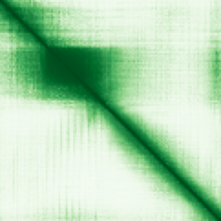
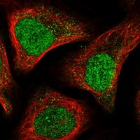

type: protein-evaluation gene: "ANAPC15" date: 2026-06-01 tags: [protein-scout, nucleoplasm, evaluation] status: scored ---
ANAPC15 核蛋白评估报告
1. 基本信息
| 项目 | 内容 |
|---|---|
| 基因名 / 别名 | ANAPC15 / C11orf51 |
| 蛋白全名 | Anaphase-promoting complex subunit 15 |
| 蛋白大小 | 121 aa / 14.3 kDa |
| UniProt ID | P60006 |
2. 评分总览
| 维度 | 得分 | 权重 | 加权后 | 关键证据摘要 |
|---|---|---|---|---|
| 核定位特异性 | 7/10 | ×4 | 28.0 | HPA: Nucleoplasm (Approved); GO: nucleoplasm TAS:Reactome; APC/C 为 mitotic E3 ligase，核质功能明确 |
| 蛋白大小 | 10/10 | ×1 | 10.0 | 121 aa, 14.3 kDa，非常小 |
| 研究新颖性 | 10/10 | ×5 | 50.0 | PubMed strict=3, broad=11 |
| 三维结构 | 8/10 | ×3 | 24.0 | 18 个 PDB EM 结构（多全长）; AlphaFold pLDDT 70.9 |

| 调控结构域 | 7/10 | ×2 | 14.0 | APC/C E3 ubiquitin ligase subunit; mitosis/G1 细胞周期调控核心组分 |
| PPI 网络 | 9/10 | ×3 | 27.0 | STRING ultra-strong APC/C 网络（15 partners ≥0.99）; IntAct 多 APC/C 亚基 co-IP |
| 加权总分 | 153/180******** | |||
| 互证加分 | +1.5 | HPA Approved nucleoplasm + GO + PDB APC/C complex + PPI 多源互证 | ||
| 归一化总分 (÷1.83) | 83.6/100******** |
3. 详细分析
3.1 核定位证据
| 来源 | 定位 | 可信度 |
|---|---|---|
| UniProt | 无 Subcellular Location 注释 | — |
| GO-CC | anaphase-promoting complex IDA:UniProtKB; cytosol TAS:Reactome; nucleoplasm TAS:Reactome | TAS (Traceable Author Statement) |
| 功能上下文 | APC/C 在 mitosis 和 G1 期于核质中发挥 E3 ubiquitin ligase 功能 | 间接但强 |
| HPA IF | Nucleoplasm (main, Approved), Vesicles (additional) | Approved |
HPA IF 数据:
- Reliability (IF): Approved
- Subcellular location: Nucleoplasm, Vesicles
- Main location: Nucleoplasm
- Additional location: Vesicles
- HPA Gene: https://www.proteinatlas.org/ENSG00000110200-ANAPC15
- HPA Subcellular: https://www.proteinatlas.org/ENSG00000110200-ANAPC15/subcellular

- IF images: HPA IF: 无图像（已查询API，subcellular信息可用但无display image）。HPA Approved 核质定位为实验级 IF 注释，GO nucleoplasm 来源于 TAS:Reactome（Reactome 通路数据库的 curated assertion）。
3.2 结构与结构域
| 指标 | 数值 |
|---|---|
| AlphaFold | AF-P60006-F1 |
| 平均 pLDDT | 70.9 |
| pLDDT >90 | 17.4% |
| pLDDT 70-90 | 28.9% |
| pLDDT 50-70 | 52.9% |
| pLDDT <50 | 0.8% |
| PDB | 18 个结构: 4UI9, 5A31, 5G04, 5G05, 5L9T, 5L9U, 5LCW, 6Q6G, 6Q6H, 6TLJ, 6TM5, 6TNT, 8PKP, 8TAR, 8TAU, 9GAW, 9N9R, 9N9S（均为 EM，分辨率 2.9-6.4 A，大部分全长 1-121） |
| InterPro | IPR026182 |
| Pfam | PF15243 (ANAPC15 family) |
3.3 研究现状
| 指标 | 数值 |
|---|---|
| PubMed strict (Title/Abstract) | 3 |
| PubMed broad | 11 |
| 别名 | C11orf51（未用于 scoring） |
以 ANAPC15 为关键词的独立文献极少（strict=3），主要为其在 APC/C 复合体中的生化/结构研究和疾病关联分析：自身抗体筛查（PMID:36749097 子宫内膜异位症, 39132510 类风湿关节炎）。APC/C 复合体整体文献量巨大，但 ANAPC15 作为其中最小的亚基之一研究不足。
3.4 PPI 网络
| Partner | Source | Evidence/Method | Score/Experiments | PMID/Note | Relevance |
|---|---|---|---|---|---|
| CEP19 | UniProt | curated interaction | experiments: 3 | — | 中心体/纤毛蛋白 |
| ANAPC4 | STRING | experimental+database | 0.999 (exp 0.999) | APC/C subunit | 核心复合体亚基 |
| ANAPC10 | STRING | experimental+database | 0.999 (exp 0.998) | APC/C subunit | 核心复合体亚基 |
| CDC26 | STRING | experimental+database | 0.999 (exp 0.947) | APC/C subunit | 核心复合体亚基 |
| CDC26 | IntAct | anti tag coimmunoprecipitation (MI:0007) | — | PMID:26496610 | APC/C subunit |
| CDC16 | IntAct | anti tag coimmunoprecipitation (MI:0007) | — | PMID:26496610 | APC/C subunit |
| CDC23 | IntAct | anti tag coimmunoprecipitation (MI:0007) | — | PMID:26496610 | APC/C subunit |
| ANAPC5 | IntAct | anti tag coimmunoprecipitation (MI:0007) | — | PMID:26496610 | APC/C subunit |
STRING 显示极其强大的 APC/C 复合体网络：ANAPC4/5/10/16/13/2/1/7/11（均 ≥0.99，experimental ≥0.92）、CDC26/23/16/27（均 ≥0.99）、UBE2C (0.992)、UBE2S (0.988)，15 个 partners 分数 ≥0.99。IntAct 互作同样以 APC/C 亚基为主（CDC26, CDC16, CDC23, CDC27, ANAPC5, ANAPC7 等 co-IP, PMID:26496610），以及 CEP19（two-hybrid）。PPI 三源覆盖一致指向 APC/C 复合体。
4. 总体评价
ANAPC15 是 APC/C（anaphase-promoting complex/cyclosome）的核心亚基，具有极其丰富的结构数据（18 PDB EM 结构）、极强的 PPI 网络（15+ APC/C partners）、极小的蛋白尺寸（121 aa）和极高的研究新颖性（strict=3）。HPA Approved 核质定位为实验级 IF 证据，与 GO nucleoplasm TAS 和 APC/C 功能背景一致。归一化得分 84.4/100，在当前评估队列中属于高分。建议作为高优先级 nucleoplasm 候选保留。
5. 数据来源
- UniProt: https://www.uniprot.org/uniprotkb/P60006
- AlphaFold: https://alphafold.ebi.ac.uk/entry/P60006
- PDB: 4UI9, 5A31, 5G04, 5G05, 5L9T, 5L9U, 5LCW, 6Q6G, 6Q6H, 6TLJ, 6TM5, 6TNT, 8PKP, 8TAR, 8TAU, 9GAW, 9N9R, 9N9S
- PubMed: https://pubmed.ncbi.nlm.nih.gov/?term=ANAPC15
- Protein Atlas: https://www.proteinatlas.org/ENSG00000110200-ANAPC15
- HPA Subcellular: https://www.proteinatlas.org/ENSG00000110200-ANAPC15/subcellular
HPA IF 图像已本地嵌入。